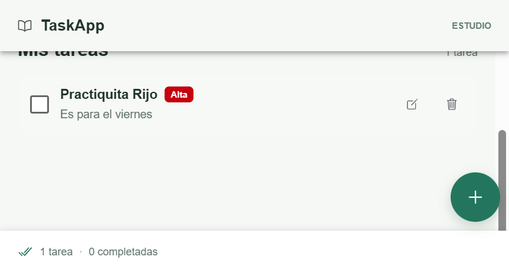
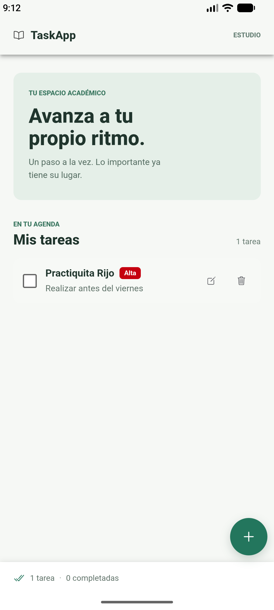

PRÁCTICA DE DESARROLLO MÓVIL HÍBRIDO
Guía paso a paso del diseño, la implementación, la persistencia y la ejecución web y Android.
TaskApp permite organizar tareas académicas desde una interfaz adaptable. El usuario puede consultar la lista, registrar tareas, elegir su prioridad, marcarlas como completadas y eliminarlas. Los datos se conservan localmente entre sesiones.
La interfaz se implementa con componentes Ionic y Angular. Capacitor empaqueta los mismos recursos web dentro de una aplicación Android; por eso el proyecto puede ejecutarse en el navegador y en un emulador o dispositivo móvil.
La interfaz Tarea define la información que se comparte entre la página, el formulario, el elemento visual y el servicio. La prioridad está restringida a tres valores para evitar datos inconsistentes.
Prioridad = 'Alta' | 'Media' | 'Baja'
Tarea {
id: number;
titulo: string;
descripcion: string;
prioridad: Prioridad;
completada: boolean;
}
El formulario entrega los campos de título, descripción y prioridad. El servicio asigna el identificador y crea cada tarea inicialmente como no completada.
La vista de inicio se organiza con ion-header, ion-title, ion-content y ion-footer. El listado usa ion-list; el acceso de creación es un ion-fab fijo en la esquina inferior.
TareaItemComponent presenta el título, la descripción y un ion-badge cuyo color depende de la prioridad. Incluye ion-checkbox, edición y eliminación. El texto se tacha cuando la tarea está completada.
La página entrega la tarea al elemento con @Input(). El componente hijo notifica cambios mediante @Output() y eventos; la página llama al servicio para alternar, editar o eliminar la tarea.
El botón flotante abre TareaFormComponent en un modal. El formulario usa ReactiveFormsModule y valida título obligatorio con mínimo cinco caracteres. También valida la descripción y permite seleccionar prioridad. El modal devuelve los datos a la página al confirmar.
TareaService centraliza la lista y las operaciones de alta, edición, cambio de estado y eliminación. Un BehaviorSubject publica los cambios para que la vista se actualice automáticamente. El servicio serializa la lista en localStorage y la recupera al iniciar.
Los componentes Ionic proporcionan controles táctiles, desplazamiento y comportamiento de lista móvil. Los estilos ajustan el ancho del contenido, el tamaño de los controles y el espaciado para pantallas pequeñas, y limitan el ancho de lectura en pantallas grandes.


Requisitos: Node.js LTS, npm e Ionic CLI. Desde la carpeta raíz del proyecto:
npm install ionic serve
Se abre la versión web adaptable en la dirección local que muestra Ionic CLI (normalmente http://localhost:8100). En PowerShell de Windows, si la política bloquea los scripts de npm, pueden usarse npm.cmd e ionic.cmd.
Capacitor integra los recursos de Angular compilados en el contenedor nativo Android. Se necesita Android Studio, Android SDK y un emulador configurado o un dispositivo con depuración USB.
npm install npm run build npx cap sync android npx cap open android
app y pulsa el botón verde Run.npm run build y npx cap sync android.El proyecto Android requiere SDK Platform 36 y Gradle JDK 17. La app se sincronizó e inició en un emulador Android durante la comprobación práctica.
ionic serve sirve la app en el navegador. La ejecución Android requiere el proyecto nativo de Capacitor y el SDK; una no sustituye a la otra.| Comprobación | Resultado |
|---|---|
| Compilación web de producción | Correcta; genera recursos en www/. |
| Lint del proyecto | Correcto; todos los archivos analizados pasan. |
| Sincronización Android con Capacitor | Correcta; recursos copiados al proyecto Android. |
| Gradle y ejecución en emulador | La sincronización Gradle terminó correctamente con JDK 17 y TaskApp se inició en Makito. |
| Requisito | Implementación |
|---|---|
| UI Ionic principal | Header, contenido, footer, lista y botón flotante. |
| Visualización de tareas | Título, descripción corta y badge de prioridad Alta, Media o Baja. |
| Modelo Tarea | id, titulo, descripcion, prioridad y completada. |
| Alta con validación | Modal reactivo; título obligatorio y mínimo cinco caracteres. |
| Estado completado | Checkbox y texto tachado. |
| Eliminación | Acción con icono y gesto de deslizar. |
| Persistencia extra | Servicio Angular, estado reactivo y localStorage. |
| Interfaz híbrida | Capacitor con plataforma Android generada y ejecutada. |
Repositorio: https://github.com/carlos01k6/TaskApp
El repositorio incluye el código fuente, el README y la plataforma Android de Capacitor. La carpeta node_modules/ está excluida por .gitignore; no se debe subir al repositorio.
El README del repositorio contiene los comandos para instalar dependencias y ejecutar la aplicación con ionic serve, además de las instrucciones para Android.
La app también permite editar tareas, confirma antes de eliminar, muestra un estado vacío y un resumen de tareas completadas. Estas extensiones complementan el objetivo sin cambiar los requisitos base.